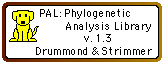

|  |
Phylogenetic Analysis LibraryVersion 1.3 |
This page represents the Phylogenetic Analysis Library (PAL) by Drummond and Strimmer, as installed for use in Mesquite. When installed, various modules in Mesquite have the option of using PAL methods for calculations. To find out what modules might be using PAL, look through their documentation.
PAL is distributed under the terms of the GNU Lesser General Public License. Source code and documentation of PAL are at the Mesquite web site. For the latest version of PAL, please go to http://www.cebl.auckland.ac.nz/pal-project/
To install PAL, the "pal" directory must be installed within "Mesquite_Folder" directory.